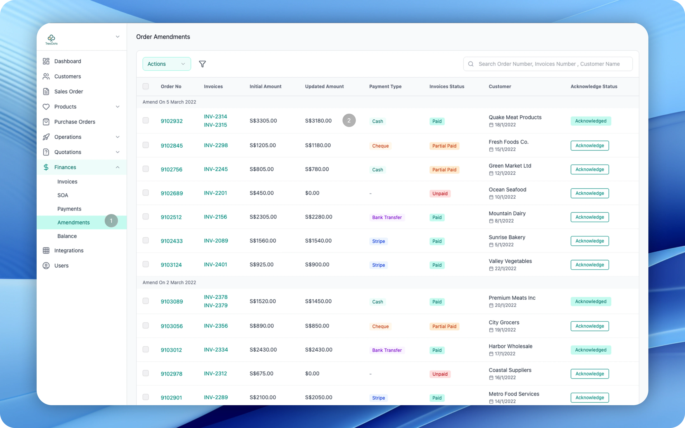
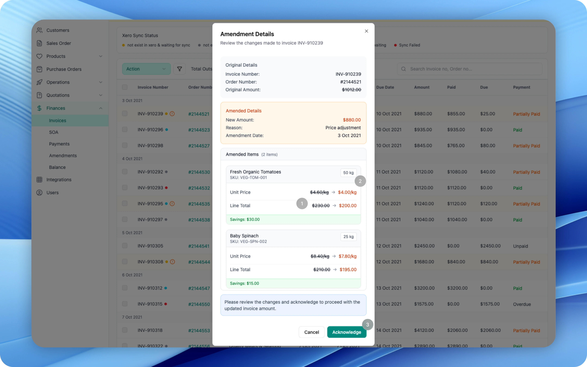

At a glance · 60 seconds
Stop opening three tools every morning.
An ops manager copy-pasted across Xero, spreadsheets, and a supplier portal — 30 minutes a day, decisions made on yesterday's numbers. I shadowed her ritual and consolidated three systems into one screen with the KPIs the team actually used.
Problem
12 copy-pastes, 30 minutes, every morning. Decisions made on yesterday's numbers.
Approach
Shadow Mei. Ship the screen she would build.
Decision
One dashboard. Three tools collapsed into one. KPIs surfaced on the first fold.
Surfaces
Live revenue, expenses, supplier payments — one screen, one login, one source of truth.
Outcome
104% ROI. Half an hour back daily. Decisions on today's numbers.
Lesson
ROI lives in rituals, not features. Find the daily 30-minute tax — that's the brief.
01 — The Problem
The Morning Ritual
Mei, the ops manager, did this every morning: open Xero for revenue, copy numbers into spreadsheets, check the supplier portal for payments. Twelve copy-pastes. Thirty minutes. Every single day.
- Xero — Revenue & expenses, updated daily. The source of truth that required a separate login.
- Spreadsheets — Manual compilation. Twelve copy-pastes per morning. One misplaced decimal could cascade through the whole report.
- Supplier Portal — Payment tracking with yet another login. Data arrived on its own schedule.
By the time data was compiled, it was already stale. The team made decisions on yesterday's numbers — and nobody questioned it because that's how it had always worked.
What if we could give her those 30 minutes back?
02 — Research
Two Perspectives, One Pain
I shadowed Mei's workflow and interviewed five stakeholders across finance and operations. Two quotes captured the entire problem:
👩💼
"I know exactly what numbers the team needs. I just don't have them in one place."
— Mei, Ops Manager
"We make decisions based on Mei's reports. But sometimes the numbers are a day behind."
— Finance Lead
Same problem, different angle. Mei spent time assembling data. Finance got stale data. Both lost. The gap wasn't missing data — it was scattered data. Every number existed somewhere. It just never existed in one place at the same time.
The data existed. The design didn't.
Persona
Mei, Ops Manager
Primary User
Mei, Ops Manager
Operations Manager at a multi-branch retail business. Responsible for daily financial reporting — a role that starts with the same 30-minute manual ritual every morning before any real work can begin.
"I know exactly what numbers the team needs. I just don't have them in one place."— Mei, Ops Manager
30 min
Morning ritual, every day
12
Copy-pastes per morning
Daily Friction
- Opens Xero, copies revenue numbers, checks supplier portal, reformats for leadership — manually, every day
- One misplaced decimal cascades through the entire report — no validation, no sync
- Amendments buried 3 clicks deep: Finance → Amendments submenu
- Finance team makes decisions on day-old numbers — real-time data doesn't exist yet
03 — Audit
Two Pain Points in the Old Design

Old interface — amendments buried in navigation, no status clarity
Beyond the daily data ritual, the existing dashboard had structural problems that compounded Mei's pain:
- Buried in Nav — The amendments page was hidden under Finance, then Amendments. Three clicks to reach a task Mei did dozens of times daily.
- No Status Clarity — Manual acknowledgement with no Xero sync and no visual hierarchy. Mei couldn't tell at a glance which amendments needed action and which were already processed.
We knew what was broken. Now — what should the fix look like?
Success Metrics
How We'll Know It Worked
Design KPIs
0 min
Morning report prep
Managers spent 20–30 min pulling reports manually each morning before any ops decision could be made
Real-time
Data freshness target
Day-old numbers caused stock decisions made on yesterday's reality — eroding trust in the entire tool
Business KPIs
>100%
Projected ROI
Eliminating daily manual reporting frees manager hours for floor ops, team coaching, and exception handling
0
Cross-tool copy-pastes
Manual data transfer was the #1 source of reconciliation errors — each mistake rippled downstream into finance
04 — Design
What Changed

Redesigned invoice page — alert banners, sync status, color-coded rows
Four changes, each solving a specific pain point from the audit:
- Alert Banner — Actionable notification for pending amendments. No more hunting through menus to find what needs attention.
- Xero Sync Status — Color-coded sync indicators at a glance. Green means synced. Red means action needed. No ambiguity.
- Amendment Badges — "Need Acknowledgement" visible per row. The interface now tells Mei what to do, not just what exists.
- Color-Coded Rows — Visual hierarchy by payment status. Scan, don't search.

Amendment details — side-by-side comparison, item-level changes, one-click acknowledge
Amendment Details — 3 Key Improvements
Original vs. Amended — side-by-side comparison in context. No more flipping between tabs to spot what changed.
Item-Level Changes — price diffs and savings per product. The detail that matters, at the level it matters.
One-Click Acknowledge — confirm without leaving the page. A task that used to take 5 clicks now takes 1.
The amendment flow was fixed. But could we solve the bigger problem — the morning ritual itself?
05 — Solution
One Screen. Every KPI.
The real solution wasn't fixing individual pages. It was eliminating the need to visit multiple tools entirely.
Revenue auto-refreshed from Xero. Orders updated in real-time. Fulfillment rate calculated live. Pending payments surfaced with action buttons. No more tab-switching. No more copy-pasting. One screen.
But did the redesign actually deliver measurable value?
06 — Results
Before & After
| Metric | Before | After |
|---|
| Data Sources | Xero + Sheets + Portal | 1 dashboard |
| Daily Prep Time | 30 minutes | 0 minutes |
| Data Freshness | Day-old | Real-time |
| Manual Steps | 12 copy-pastes | 0 (automated) |
| Error Risk | High (manual) | Near-zero |
104% ROI — 30 min/day x 250 days = 125 hrs recovered. 125h x $11/h = ~$1,375 saved vs. ~$1,360 design cost. Break-even at month 6.
The KPI card component was adopted downstream and became part of TreeDots' internal design system — extending the impact beyond this single project.
07 — Validation
"What do I do with my morning now?"
👩💼
"What do I do with my morning now?"
— Mei, first morning after launch
That was the best user feedback I've ever received. She didn't miss the 30 minutes. She'd already forgotten what she used to do with them. Task completion dropped from 30 minutes to under 2 minutes.
The design didn't just save time — it made an entire category of daily friction disappear so completely that the person who suffered from it most couldn't remember it existed.
08 — Reflection
Four Lessons
01 — Time savings compound at scale.
0.5h/day sounds small. Across a year, it's 125+ hours — three extra work weeks. Small daily friction, multiplied by 250 working days, becomes a line item.
02 — The data existed. The design didn't.
No new APIs needed. The entire ROI came from restructuring information architecture. The most valuable design work doesn't add — it reorganizes.
03 — Reducing tools > adding features.
3 systems to 1 dashboard. The highest-impact decision was subtraction. Every tool switch is a context switch, and context switches are where time quietly bleeds.
04 — Remote research works with the right questions.
Interviewing Mei about her daily routine surfaced the pain points — and the time-cost data we needed for ROI. You don't need a lab. You need the right questions and the willingness to watch someone work.
Time Machine
If I Could Go Back
What I assumed
Structured usability test
Plan a formal usability study with defined tasks and metrics.
What I missed
Anecdote vs evidence
Stakeholders shared stories but we needed numbers to prove value.
What I'd do
A/B test with time-tracking
Run old vs new workflow with stopwatch data to quantify savings.
Expected outcome
Bulletproof ROI
Hard numbers that make the business case undeniable.
Thanks for Reading
Let's build
something great
Open to senior roles in product and UX. Looking for a team that ships things and cares whether they work.
kaungmyat9702@gmail.com
Open to Work
Senior Product Designer